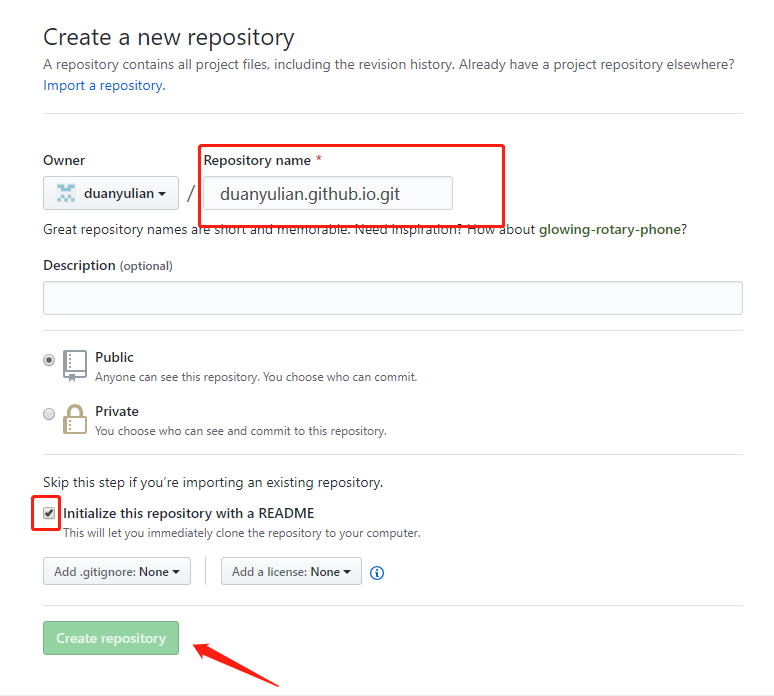

获取时间戳
获取到秒
1
Date.parse(new Data())
精确到毫秒
1
(new Date()).valueOf();
valueOf()返回对象的原始值,即返回new Data () 这个对象的原始值,即当前时间到1970年1月1日00分00秒000的毫秒数。
精确到毫秒
1
(new Date()).getTime();
getTime()表示从1970年1月1日00分00秒（UTC，即协调世界时 ）到该日期对象的毫秒数。
转化时间戳
- 固定g格式的时间 例如:
1
new Date ('2010-05-07 17:13:00')
- 固定g格式的时间 例如:
时间戳转化正常显示的时间
1
2
3
4
5
6
7
8
9
10fliterTime(val) {
var date = new Date(val * 1000); //如果val.length < 13 则表示时间戳精确到秒了 则乘以1000
const Y = date.getFullYear() + '-';
const M =( date.getMonth() + 1) < 10 ? "0" + (date.getMonth() + 1) + '-' :( date.getMonth() + 1) + '-';
const D = date.getDate() < 10 ? "0" + date.getDate() + '-' : date.getDate() + '-';
const H = date.getHours() < 10 ? '0' + date.getHours() + ' ' : date.getHours() + ' ';
const F = date.getMinutes() < 10 ? '0' + date.getMinutes() + ':' : date.getMinutes() + ':'
const S = date.getSeconds() < 10 ? '0' + date.getSeconds() : date.getSeconds()
return val ? (Y + M + D + H + F + S) : '/'
}getDate()是获取一个月某一天（1~31）;getDay()是获取一个月中的星期几（0~6）
Hexo+Github Pages轻松搭博客(2)：在Github上部署
使用免费的Github Pages服务或者部署在自己服务器上，别人就可以访问你的博客啦！
关联Github
复制链接创建新的仓库 填写 红色红框框内容

接下来打开博客目录下的_config.yml配置文件,(注意冒号后面有个空格，不然会出错滴~)定位到最后的deploy选项，修改如下：
1 | deploy: |
配置好之后，使用下面的命令就可以部署到Github上了：
1 | $ hexo clean |
这样通过Github提供的域名地址（如我的：https://duanyulian.github.io）就可以访问你的博客了，简单快速高效！
发布新博客
- 直接在source文件夹下面的_posts 新建XX.md文件
- 用指令新建写完之后依然使用之前的三条命令发布：
1
$ hexo new '我的第一篇博客'
最后两步可以简写：1
2
3$ hexo clean
$ hexo g
$ hexo d1
$ hexo g -d
常出现的问题
- 在hexo d进行部署时，如果出现ERROR Deployer not found: git的问题，可以先用下面的命令修复：
1
$ npm install hexo-deployer-git --save
- 如果你没配置过ssh导致部署失败（可以通过ssh -T username@example.com来测试ssh有无配置成功），可以参考这篇文章：针对github权限导致hexo部署失败的解决方案
Hexo+Github Pages轻松搭博客(1)
简介
Hexo是一个免费的静态Blog生成工具。简单来说，就是把你写的Markdown博客文件生成静态网页，把这个网页放在Github或者你自己的服务器上就可以快速访问了。软件界，从来不缺自动化工具(ง •_•)ง
安装
官网文档：Hexo Docs
!!!安装前 需要安装 ：
1 | $ npm install -g hexo-cli |
初始化博客目录
在你的本地新建一个存放博客的目录，比如”D:\MyHexoBlog“，然后在这个目录右键，选择”Git Bash Here“，输入下面两条命令进行初始化：
1 | $ hexo init |
初始化完成之后，你的目录结构应该是这样的：
如果没有出错的话，继续执行下面的指令启动服务：
1 | $ hexo g |
-启动之后，在浏览器中访问:http://localhost:4000/,是不是看到了漂亮的Hexo博客页面了。不过目前这个博客还是运行在你本机上的，下篇我们看一下怎么样让别人也能访问这个博客。
markdowm基本用法
1.使用 # 号标记
- 使用 # 号可表示 1-6 级标题，一级标题对应一个 # 号，二级标题对应两个 # 号，以此类推。
2. 列表
- Markdown 支持有序列表和无序列表。
- 无序列表使用星号(*)、加号(+)或是减号(-)作为列表标记：
3.代码
- 链接名称
- <链接地址>
>>>更多请参考菜鸟
Hello World
Welcome to Hexo! This is your very first post. Check documentation for more info. If you get any problems when using Hexo, you can find the answer in troubleshooting or you can ask me on GitHub.
Quick Start
Create a new post
1 | $ hexo new "My New Post" |
More info: Writing
Run server
1 | $ hexo server |
More info: Server
Generate static files
1 | $ hexo generate |
More info: Generating
Deploy to remote sites
1 | $ hexo deploy |
More info: Deployment